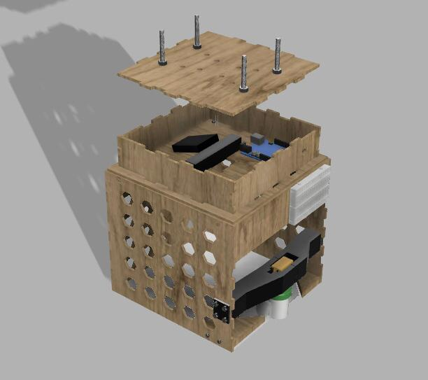
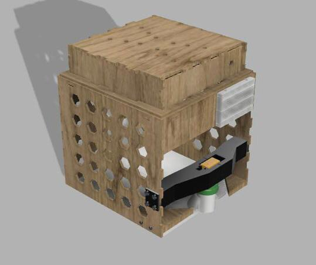
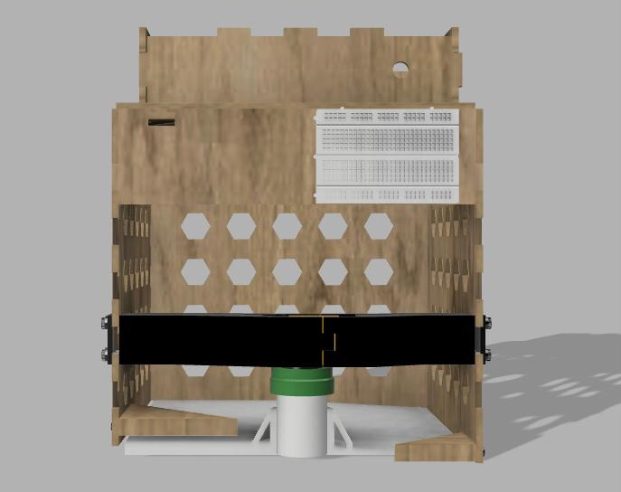

Gripper's End Effector
Jan 17, 2024 ・ 1 min read
Developed at EPFL, this project focused on object detection and CAD design to create a robotic gripper for a robotic arm. The gripper successfully grasped and lifted 5 unknown objects of different shapes and sizes with 100% accuracy.
Key Features:
- ➡️ Object Detection: A YOLOv4-trained camera detects and identifies objects in real-time, ensuring precise recognition.
- ➡️ Fusion 360 CAD Design: The gripper was modeled in Fusion 360, with a focus on mechanical efficiency and integration.
- ➡️ Fabrication: 3D printing (PETG & ULTRADETAIL) for motor supports and paddle, and laser-cut wood for structural components.
- ➡️ Gripping Mechanism: A DC motor with a direct-drive adapter rotates the paddle 160°, ensuring smooth and reliable object manipulation.
The integration of AI-powered detection with precision CAD modeling resulted in a robust and highly reliable robotic end-effector.


